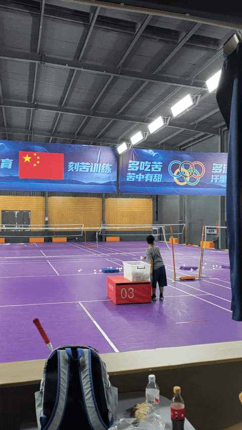

儿童羽毛球课亲测：好的课程设置是如何“勾住”孩子的？
一、小朋友的运动难题
① 难在动起来
几乎所有家长都知道运动的重要性，运动的好处多多，不仅能强身健体更能培养运动习惯和对于各项运动的兴趣。
可以说，不论是短期收益还是长期收益，把时间投入在运动上绝对是物超所值的。
现在小朋友有太多的玩乐能独自在家完成：看电视、玩游戏、拼乐高……
有时候想让小朋友下楼蹦哒蹦哒都不是一件容易的事。
② 难在坚持
上过多个课程之后，几乎都是 三分钟热度，在上课的时候会进行相关运动，下课后和周末都不会主动提及更别说去做相关运动。
轮滑和 陆地冲浪板是很早之前学过的，学习期间还能有三分钟热度，结课之后一段时间就忘了这两个运动。
③ 难在匹配度
可能很多人会说，运动是耳濡目染的，家长多在运动的时候把孩子放在身边这样孩子也能爱上某项运动。
完全有这个可能性，同时也有很大的可能性家长喜欢的运动并不是小朋友喜欢的，强行教学更会对 亲子关系产生不利 影响。
二、一节儿童羽毛球课
① 上课前的准备
吸取了以往的经验教训，提前一周把他带过去机构看邻居家的小朋友上课。
没有上场体验， 只在机构的休息区待了 20 多分钟，主打一个感受上课氛围与观察上课内容。场上有各个年龄段的小朋友，感觉最小的估计是幼儿园的，大的可能快初中。
在回去车上沟通的时候，他有很想当时就上课的意愿，说明大概率被吸引到了，能感受到热度是有了。
最终，一周后的周五放学后直接开车去上课。
② 正式上课
没有约专门的体验课，周五放学后直接过去和正式的学员一起上课。教练在询问具体情况之后，便快速教了练习动作并分配好练习内容：
把羽毛球扔到网后的垫子上。

可能是旁边就有其他小朋友在练习，又或者扔东西符合小朋友的天性，他很配合的完成着教练安排的项目。

就这样，一个个动作进行着：
- 一会儿练习扔球
- 一会儿挥拍练习
- 一会儿集体拉伸
- 一会儿练习脚步
- ……
轻轻松松，极其顺利的接近两个小时的羽毛球课得以完成，在下课之后还自己去玩了一会儿，作为家长也是第一次遇到这种情况。

三、 有意思的课程设置
此前并没有给娃报名过羽毛球课，见过不少次少儿篮球培训。
相比篮球，羽毛球不容易累，入手的门槛低一点，风险系数小一点。
观察授课的过程，发现几个有意思的点：
① 合理 拆分 授课内容
一堂课拆分成许多个小项目，每个项目层层递进， 时长在 15 分钟左右，在学生觉得累之前结束。
② 不易累有利于坚持
得益于课堂内容的拆分，即使是比较累的项目也不会让学生累到，度把握的很好，休息的时候喝口水又能继续上课。
③ 先完成后完美
教练会大声的喊口号提醒动作细节，但实际上 雷声大雨点小， 对学生并不严厉，先让学生先按自己的理解和能力去完成动作。
五、小结
先不管学后的成果如何，小朋友能愿意学或者有空了想进行相关运动都是很好很好的事情，也提醒我作为家长要带孩子多体验多感受。
有一个能坚持多年的运动方面的爱好很不容易，本次羽毛球课程的体验似乎引起了他的兴趣，也已经又报名了4次课程，再深度体验和参与 4 次课，希望这次娃能坚持下来吧。